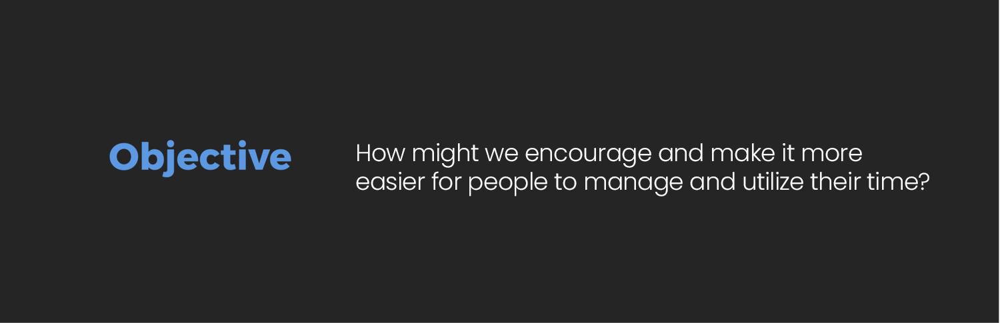

Todoly
Objecive
How might we encourage and make it more easier for people to utilize their time?
Solution
Todoly— A mobile app that allows busy developers to feel more productive (and thus emopowered) by centralizing all tasks, and providing the capabilty to time each task.
DEFINE
I have always found myself doing multiple tasks at the same time. This results to uncompleted projects leaving me stressed out at the end of the day. Discovering what works for me(assigning an hour or two to each task and actually completing it) has made me a more productive, empathetic and inclusive developer and designer.
IDEATION + CONCEPT DEVELOPMENT
With the design principles from my research synthesis, I started sketching some ideas for the mobile app. The primary features that I wanted included were:
- The ability to add, delete and view tasks.
- A place to add short task descriptions
- The ability to time each task
FINAL PRODUCT
After testing, iterating, and considering different color palettes and typography, I moved on to higher fidelity and finally built the product. Below is a video of the finished product - showing a user's interaction with the product.
WHAT I LEARNED & NEXT STEPS
This was a solo side project and I’m really happy with the results thus far. There are so many directions that this app concept can scale to; for this project, I prioritized and scoped what I could to create a minimum viable product. This self-motivated project helped me learn how to scope and prioritize what informations should be on each screen.